This work is licensed
under a Creative
Commons Attribution-ShareAlike 2.5 Spain License
This work is licensed
under a Creative
Commons Attribution-ShareAlike 2.5 Spain License
|
"Robótica Modular y Locomoción”. Madridbot. Marzo-2007 |
|
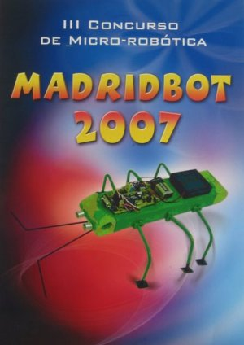 |
Título de la charla: “Robótica Modular y Locomoción”
Duración: 30 minutos
Evento: MadridBot 2007
Organización: Comité de organización.
Persona de contacto: D. Fernando Remiro.
Lugar: I.E.S Joan Miró , San Sebastián de los Reyes, Madrid
Fecha: 22 de Marzo de 2007
Ponente:
Programa del evento (Folleto) (Fe de erratas: Donde pone Juan Rodríguez, debería poner Juan González :-)
En esta charla se da una breve introducción a la robótica modular y la locomoción, un nuevo campo que tiene mucho futuro. Se presentan y explican los módulos Y1, diseñados para poder construir diferentes configuraciones de robots y hacer experimentos. Se caracterizan porque son muy baratos y fáciles de montar. Con ellos se han construidos los robots mínimos (configuraciones mínimas) que son capaces de moverse en una y dos dimensiones. Se muestra mediante demostraciones en vivo cuáles son los principios de locomoción de estos mini-robots y cómo afectan los parámetros de amplitud, frecuencia y diferencia de fase a la locomoción.
El siguiente robot que se explica es Cube Revolutions, constituido por 8 módulos y1 conectados con la misma orientación. Está limitado al movimiento en línea recta, sin embargo se enseña mediante vídeos las nuevas posibilidades que aparecen al disponer de más módulos: el robot puede cambiar su forma y se puede autotransformar.
Finalmente se hace una demostración en vivo de cómo el robot Hypercube es capaz de moverse de diferentes maneras por una superficie. Es capaz de avanzar, describir un arco, desplazarse lateralmente, rotar y rodar.
Se permite la copia, distribución y modificación de este documento siempre y cuando se siga manteniendo con la misma licencia
|
|
|
Descarga de la presentación |
|
Presentación para OpenOffice 2.0 |
|
|
Presentación en PDF |
Algunos de los vídeos que se mostraron en la presentación:
Un módulo Y1 en movimiento [Vídeo].
Conexión de dos Módulos Y1 con la misma orientación [Vídeo].
Conexión de dos módulos Y1 con diferentes orientaciones [Vídeo].
La configuración PP moviéndose hacia adelante y hacia atrás [Vídeo].
La configuración PP cuando las ondas están en fase [Vídeo].
La configuración PP cuando las ondas están en oposición de fase [Vídeo]
Configuración PYP moviéndose en línea recta [Vídeo]
Configuración PYP describiendo un arco [Vídeo]
Configuración PYP moviéndose lateralmente [Vídeo]
Configuración PYP rodando lateralmente [Vídeo]
Cube Revolutions moviéndose mediante ondas periódicas [Vídeo]
Cube Revolutions moviéndose con semi-ondas [Vídeo]
Cube Revolutions haciendo la cobra [Vídeo].
Cube Revolutions enrollándose [Vídeo].
Cube Revolutions moviéndose como una rueda [Vídeo]
Tux montando sobre Cube revolutions ;-) [Vídeo]
Friki-cube moviéndose [Vídeo]
Friki-cube haciendo la cobra [Vídeo]
Hypercube moviéndose en línea recta [Vídeo]
Hypercube describiendo un arco [Vídeo]
Hypercube moviéndose lateralmente [Vídeo]
Hypercube rotando paralelamente al suelo [Vídeo]
Hypercube rodando [Vídeo]
Hypercube con forma de cuadrado [Vídeo]
Información sobre los módulos Y1
Robot Cube Revolutions
Artículo: “Locomotion of a Modular Worm-like Robot using a FPGA-based embedded MicroBlaze Soft-processor”, sobre Cube Revolutions (en inglés)
Artículo: “Evaluation of a locomotion algorithm for worm-like robots on FPGA-embedded processors”. Sobre Cube Revolutions. (En inglés).
Artículo: “Motion of Minimal Configurations of a Modular Robot: Sinusoidal, Lateral Rolling and Lateral Shift”. Sobre las configuraciones mínimas (en inglés).
Artículo: “Locomotion of a Modular Robot with Eight Pitch-Yaw-Connecting Modules”. Sobre Hypercube (en inglés).
El III concurso de Micro-Robótica Madridbot 2007 se celebró los días 21 y 22 de Marzo en el I.E.S “Joan Miró”, en San Sebastián de los Reyes, en Madrid. El año anterior, Fernando Remiro se puso en contacto conmigo para asistir, pero no pude porque estaba de estancia en Hamburgo. Sin embargo este año sí que pude estar.
Madridbot comenzó el miércoles 21 de Marzo. Se celebraron las pruebas clasificatorias del Laberinto, de rastreadores y velocistas, y Julio Pastor impartió la conferencia “Hispabot y Eurobot”.
Este tipo de eventos me gustan mucho. Sin embargo, no pude acudir hasta el día siguiente. Llegué pronto. Habían montado una carpa bastante grande (foto de la izquierda), con un escenario donde se harían las pruebas y las ponencias. En el otro extremo de la carpa estaban los “boxes” donde los participantes ponían sus robots a punto.
La primera prueba que se hizo fue la final del concurso del laberinto. En la foto de la derecha está Fernando Remiro llamando a los participantes.
|
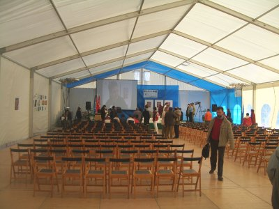 |
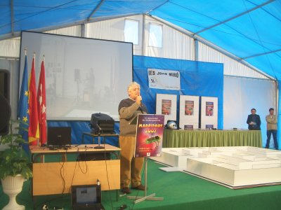 |
En la foto de la izquierda se puede ver el laberinto y cómo uno de los robots participantes está logrando salir. En la foto de la derecha está Jose Ignacio Bermejo, con el que había estado hace poco en las I Jornadas de ARDE en Málaga. Y es que el mundo de la robótica es un pañuelo ;-)
|
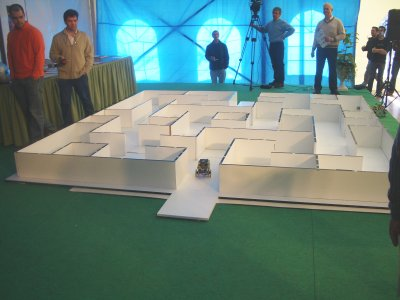 |
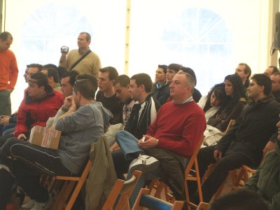 |
Después de la final del laberinto, dí mi conferencia sobre “robótica modular y locomoción”. Hice demostraciones en vivo de las configuraciones mínimas y del robot Hypercube. Tenían una cámara que apuntaba a los robots, por lo que los asistentes pudieron ver muy bien su funcionamiento en directo. También proyecté algunos vídeos frikis de Cube Revolutions :-)
En la foto de la derecha se puede ver a los asistentes. Había bastante gente. Esto de la robótica cada vez gusta más ;-)
|
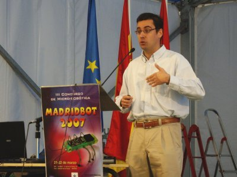 |
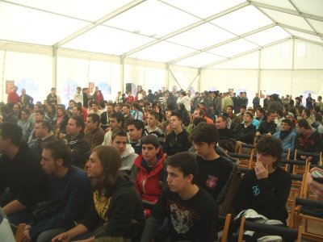 |
Los siguientes ponentes fueron Vicente Matellán, del grupo de robótica de la Universidad Rey Juan Carlos y Francisco Tortosa de la empresa Microladder de Murcia. En la foto de la izquierda están, de izquierda a derecha, Vicente Matellán, Julio Pastor y Francisco Tortosa.
En la derecha estamos Ángel Hernández (Mif), Tupperbot y yo. El tupperbot fue el ganador en la prueba libre. ¡Es un robot cachondo! :-)
|
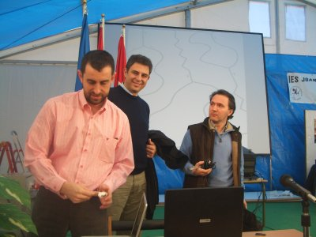 |
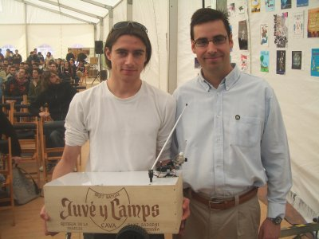 |
La siguiente prueba fue la de rastreadores (foto de la izquierda) y a continuación la conferencia “Funcionamiento y programación de un robot cuadrúpedo” por Vicente Matellán. Fue una pena que no se pudiese quedar a comer. No nos veíamos desde su participación en la Roboludens, en Abril del 2006, en Eindhoven.
|
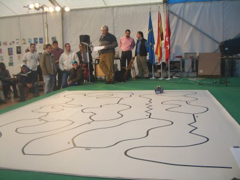 |
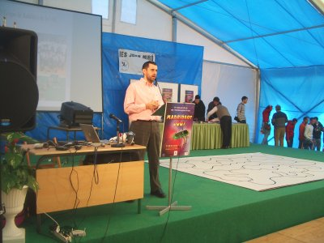 |
|
|